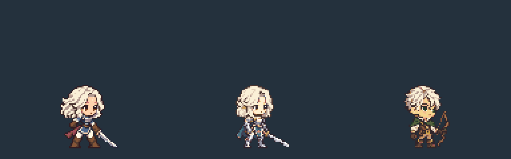

남성 헌터 / 활 · 기본 7종 · 스킬 모션 8종 / 18개 스킬쿠키 · 기사 · 헌터 — 동일 배율 비교

128×120 · 대기 키 48px · 발 기준 (64,112)
1× GIF · 4× GIF · 프레임 시트
스킬 타격·설치·매 지시 프레임은 시작 130ms. 집중·탐지·호각에는 타격 프레임이 없습니다.매, 덫, 비행 화살과 이펙트는 게임에서 별도로 표시합니다.
제작 기록 · 매니페스트 · 검증 결과